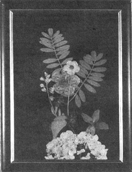
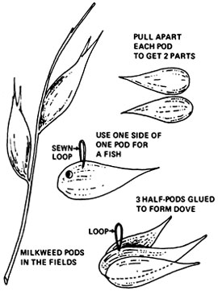
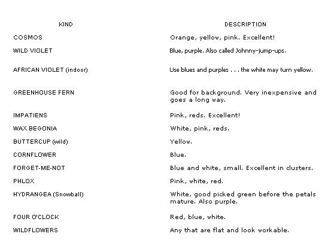

FIELD-SIDE MEMORABILIA
Larger weeds (one to two feet high) tied together in bunches and hung upside down for a few weeks make great centerpieces . . . and bring in more dollars. Spray paint the dried plants or leave them natural.
For handmade Christmas ornaments, gifts and novelties: Collect opened milkweed pods in the fall. Pull the two sides apart and let the pieces dry a few days to make sure they're brown and free of moisture. Glue three half-pods together to make a dove, or use just one segment as a fish shape. Sew a single loop of thread in a central position and spray paint or hand-decorate designs.
FLOWERS FOR DRYING
The following are good materials for beginners, guaranteed to dry well. Some of my pictures made from these ingredients are now two years old and haven't discolored, faded or deteriorated. Flat-petaled blooms are best . . . petunias, roses, dahlias, etc., are no good unless you pull apart the flower heads and rearrange them after they've dried (a challenging project).
Every spring and summer, not so long ago, I'd grub daily in the earth . . . weeding, mulching, coaxing my flower patch to bloom. By July there would be buds, by August blooms and by September death: the growing season over and a lot of work and beauty lost. No more! Now, with the seedlings just popping out of the ground, I'm looking forward to turning those fleeting delights into long-lasting, attractive floral "pictures" . . . and a handy source of extra cash.
I got started in this profitable craft almost by accident. One day I picked a few cosmos blooms, brought them inside and placed them between the pages of an old magazine (remember the orchid from the high school prom?). Two weeks later, I returned to find the flowers dried and still perfect in shape and color. Inspired, I dug out an old picture frame and was on my way. Here, for all you other flower freaks, is the technique I've worked out since that beginning.
First, the flowers. I've included with this article a list of beginner-proof species, and you'll soon find other good kinds near you . . . probably right outside the kitchen door. Pick them, on a sunny day around noon, when there's a minimum of humidity and dew on the petals.
Indoors, away from breezes and the kids, lay your treasures on two thicknesses of paper toweling. Press each bloom flat with your fingers. The center part can be removed if it's too bulky, and the stem either snipped off or left, depending on whether you like its looks. Space the prepared materials half an inch apart on the sheet. When the page is full, cover it with two more layers of toweling and several open facial tissues. Then carefully place the "sandwich" between the pages of a magazine. (Use an old, discarded periodical-not a MOTHER-so you won't mind if the paper is discolored in the process.)
Lay the closed magazine on a hard, flat surface (the attic floor is low in humidity and out of harm's way). Bring out the heaviest-bricks, dictionary, etc.-and place them on top of the improvised flower press. The blossoms will be dry and flat in a week or two.
Meanwhile, you can be collecting the rest of the materials. Buy or find inexpensive black velvet (short, flat nap is the best and least bulky to work with). Frames can be bought complete in local discount stores-at a cost of 69 cents to 90 cents for three-by-five-inch or five-by-seven-inch sizes-or picked up at roadside flea markets for next to nothing. Look for those with the glass intact. Missing backings don't matter . . . cardboard taken from laundered, folded shirts or cereal boxes is ideal in weight and stiffness. The finish of a frame, too, is unimportant. Sandpaper and a can of spray paint work wonders for a quick refurbishing.
Cut the cardboard 1/4 inch smaller all around than the opening at the back of the frame. Next, prepare a piece of velvet about 1/2 inch larger than the backing and glue it over the cardboard, clipping and trimming the corners to reduce the bulk. Dried ferns and flowers can then be set on that background in any desired arrangement. Just place the materials . . . don't glue them, or the petals will be discolored. Each picture is unique and the variations endless. Simple designs, though, are best.
Clean the glass well, dry it and place it over the flowers. With the covering well pressed to the velvet, turn the creation over (backside up) and slide the whole works slowly into the frame. As long as the glass is held firmly, the blossoms won't slip out of place. Practice will enable you to do this fearlessly and well.
Then glue kraft paper (the brown grocery bag kind) over the back of the frame, clean the glass in front and the picture is finished. My first attempt took my beginner's thumbs half an hour to assemble. Now I need only 15 minutes for each floral ornament.
My craft began as a means of keeping all the beautiful life of summer for my own pleasure . . . but soon grew into a source of gifts which I gave friends and relatives on all occasions. Even so, it took a lot of convincing from Ron-my husband-and other fans before I was ready to try marketing my craft. The first time out, I felt most comfortable approaching a nearby community store that specialized in the sale of homemade articles (and particularly local goods). From there I went on to more commercial shops. I shouldn't have been reluctant . . . my pictures were welcomed.
We live near a populous center, so access to my market was relatively easy. If your place is out in the backwoods, get together 15 or 20 pictures and make a day of it downtown. Go anywhere, from super-straight gift boutiques to real head shops. There's no need to make a special sales effort. Just be sincere and honest, and your genuine local handcraft will practically sell itself. Most likely you'll find-as I did-that people are really interested and friendly from the start.
Almost all shops will take articles on a consignment basis (that is, you leave four or five and when they're sold you get the cash). Be sure to tell the proprietors what you think your pictures should sell for ... you'll probably be asked anyway. My five-by-seven-inch size goes for about $3.00, and the store generally takes 10% of the price as commission. The exposure is certainly worth 30 cents!
Give the storekeeper your name, address and telephone number, if you have one, and don't leave the shop without a receipt to show that the establishment has so many of your pictures. Although I've found no rip-offs yet, it's best to be on the safe side. File the paper carefully should you need it in the future.
Then sit back and wait . . . but keep busy making more Pictures and trying new places to sell. Usually you'll come across a real business doer who will make a special effort to display and talk up your goodies. Also, don't forget any exhibits of local crafts in shopping centers and community fairs.
Original work really goes over. The more effort you put into the venture, the higher the return. Just use your eyes and imagination, create, enjoy . . . and keep those extra funds rolling in.
|
 |
 |
 |